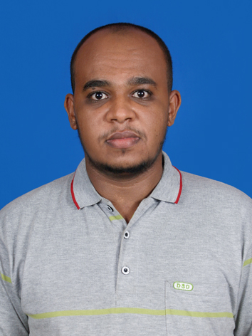

Earthquake-cycle geodesy
Interseismic strain, coseismic slip and postseismic deformation, including afterslip, aftershock triggering and stress transfer between faults.
Geodesy · Seismology · Remote sensing
PhD Researcher in Geodesy & Seismology
Surveying Engineer
University of Chinese Academy of Sciences
Innovation Academy for Precision Measurement Science and Technology, CAS
I use InSAR and GNSS to study how the Earth's crust moves before, during and after earthquakes, how faults slip, and how earthquakes influence nearby faults. My background also includes remote sensing, GIS and gravimetric geoid modelling.
Excellent Poster Award · Geodesy & Geodynamics / TibXS, 2025

Understanding the Earth through satellite and geodetic observations.
Interseismic strain, coseismic slip and postseismic deformation, including afterslip, aftershock triggering and stress transfer between faults.
Satellite imagery and radar interferometry for deformation time series, land subsidence and geospatial analysis.
Gravimetric geoid modelling, gravity-field analysis and evaluation of global geopotential models using terrestrial and satellite observations.
Featured research
My first-author study examines the relationship between coseismic rupture, afterslip and aftershocks following the Mw 7.1 Wushi earthquake, using satellite observations and fault-slip modelling.
Read the paperWork in progress: Four additional research manuscripts are in progress or under review.
Five journal articles and three conference papers. My name is highlighted in the author lists.
8 of 8 publications
Remote Sensing, 18(16), 2739
Geophysical Research Letters
Indonesian Journal of Urban and Environmental Technology, 9(1), 40–60
Journal of Applied Geodesy, 19(1), 25–48
IOP Conference Series: Earth and Environmental Science, 1127(1), 012014
Journal of Marine-Earth Science and Technology
Based on my BSc thesis.
doi:10.12962/j27745449.v2i2.101IOP Conference Series: Earth and Environmental Science, 936(1), 012035
IOP Conference Series: Earth and Environmental Science, 936(1), 012029
No publications match this search.
A background in surveying and geomatics, followed by doctoral research in earthquake deformation.
Sep 2023 – Jul 2027 (expected)
University of Chinese Academy of Sciences (UCAS), Beijing, China
Doctoral research host since January 2024: Innovation Academy for Precision Measurement Science and Technology, CAS, Wuhan. PhD qualification examination passed in June 2024.
Jul 2020 – Aug 2022
Institut Teknologi Sepuluh Nopember (ITS), Surabaya, Indonesia
Cum laude · CGPA 3.86/4.00. Department of Geomatics Engineering.
2012 – 2017
Omdurman Islamic University, Sudan
Second Class, Division One. Faculty of Engineering Sciences.
Jan 2024 – Present
Innovation Academy for Precision Measurement Science and Technology, CAS
Jul 2020 – Aug 2022
Institut Teknologi Sepuluh Nopember (ITS)
Sep 2022 – Nov 2024
Department of Surveying Engineering, Omdurman Islamic University, Sudan
Taught undergraduate courses and supervised final-year projects and BSc theses.
Dec 2017 – Dec 2018
Dar Consult, Khartoum, Sudan
Consultant surveying engineer on road and bridge projects; modified engineering designs and supervised contractors during site implementation.
Methods and tools for geodetic research, geospatial analysis and surveying engineering.
InSAR processing and time-series analysis (SBAS, PS-InSAR); GNSS data processing; deformation monitoring; coseismic and postseismic modelling; finite-fault inversion; Coulomb stress and elastic dislocation modelling; gravimetric geoid modelling; least-squares adjustment and uncertainty analysis.
Satellite image processing; SAR interferometry; LiDAR point-cloud processing; digital elevation model generation; geospatial data processing and analysis.
MATLAB and Python for scientific analysis; Bash shell scripting; Git version control; Linux/Unix environments.
Machine learning and artificial intelligence applied to geoscience data.
Tools for radar interferometry, GNSS processing, fault-slip modelling and physical geodesy.
Scientific maps, figures and research documentation.
GNSS RTK, total station, levelling, topographic surveys, setting out, network adjustment and surveying data processing.
Time management; problem-solving; work ethic; presentation and communication; teamwork; quick learning and adaptability; research and analytical thinking; creativity.
Research presentations and professional development in satellite observations, geodesy and engineering.
Kunming, China · 10–14 August 2026
Presenter
Xining, China · 1–4 August 2025
Poster presentation · Excellent Poster Award
Global Geodetic Observing System · International Association of Geodesy
Participant
ITS, Indonesia · Sudan gravimetric geoid modelling using least-squares collocation
Presenter
ITS, Indonesia · Geospatial solutions for hazards and disaster management
Presenter
Institut Teknologi Sepuluh Nopember, Indonesia
Presenter
Centre for Observation and Modelling of Earthquakes, Volcanoes and Tectonics, UK.
AGS, Hong Kong · construction-site risk reduction and long-term asset monitoring.
Esri · accessing and tasking satellite imagery.
NOAA · automated bathymetry from satellite observations.
Esri.
NOAA NGS / COMET · noise analysis, orbit determination, multi-GNSS positioning, space weather, antenna calibration and survey planning.
EarthScope Consortium / Miami University · Linux, shell scripting, GMT and introductory SAC tutorials.
NOAA NGS / COMET · Geoid Monitoring Service (GeMS), Gravity for Geodesy II and GEOID2022.
OPUS, CORS, reference-system modernisation, absolute gravity, geoid change and sea-level observations.
Researcher Academy / University of Nottingham · manuscript preparation, publication ethics, research metrics and journal selection; systematic-review training (June 2024).
Zoohal Engineering and Training Center · AutoCAD Civil 3D, Primavera P6, PlanSwift, earthworks, Excel quantity surveying, project costs and contracts.
Sudan Survey Authority · digital levelling, Leica total station, GPS fundamentals, data transfer and field surveying.
Recognition for research presentations and academic achievement.
Joint Geodesy and Geodynamics Symposium & 13th TibXS Workshop · Xining, China.
ANSO Scholarship for Young Talents · ANSO, Chinese Academy of Sciences and TWAS/UNESCO.
Institut Teknologi Sepuluh Nopember · CGPA 3.86/4.00.
Indonesian Government · master’s studies in Geomatics Engineering at ITS.
Omdurman Islamic University · highest semester-10 performance and second-best overall fifth-year result (2016/2017).
A Sudanese engineer and researcher based in Wuhan, China.
My studies and work have taken me from Sudan to Indonesia and China. I combine a practical surveying background with research in geomatics, physical geodesy and earthquake deformation.
Outside research, I enjoy learning languages, travel and cultural exchange, reading about science and technology, photography, football, hiking and field exploration.
Reviewer, Journal of Marine-Earth Science and Technology
May 2023 – Present
Graduate Engineer (Surveying), Sudan Engineering Council · April 2018.
EC/ER/GE/55449
Research collaboration, academic enquiries and geospatial engineering opportunities.
I welcome conversations about earthquake geodesy, satellite observations, GIS and gravimetric geoid modelling. You can reach me by email or through my professional profiles.